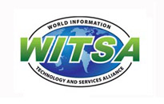
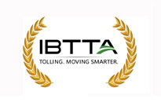
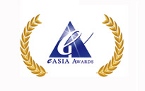
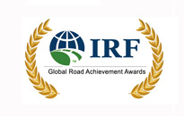
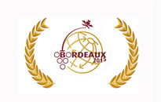
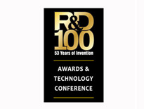

Taiwan ETC has garnered the world’s recognition through several awards for its outstanding performance in qualities, services, operation KPIs, and sustainable business model. The innovative Public Private Partnership (PPP) model has also been recognized as one of the key factors to the success of Taiwan ETC program.

 |
 |
2017 WITSA Global ICT Excellence Awards in the Private Sector Excellence Category |
The 2017 WITSA Awards was remarkable for its large number of highly qualified nominees, received from WITSA’s network of ICT industry associations in 80 countries around the world. FETC has achieved the most successful Private-Public-Partnership Project in the ITS traffic management in the world; it has successfully developed RFID-based ETC total solution to turning traditional highway toll collection system into an integrated intelligent electronic toll collection (ETC) system for mobility management. This system is also used to manage traffic congestion on the nation’s freeways and is a perfect demonstration of Internet of Things (IOT) which will allow for a more connected future. |
 |
|
IBTTA 2015 Toll Excellence Awards |
Customer Service and Marketing Outreach, each year the award recognizes the very best international tolling projects and programs. The winner is awarded for its creativity and innovation that sets a new standard of excellence. Freeway Bureau, MOTC and the program conducted by FETC won the award for rapid deployment of electronic, distance-based toll collection system with world’s highest tolling accuracy rate of 99.97% and detection accuracy rate of 99.9% |
 |
|
eAsia Awards 2015 |
First Prize among e-Business in private sector. eASIA Award has been announced by Asia Pacific Council for Trade Facilitation and Electronic Business (AFACT) every two years. The purpose of the e-ASIA Awards is to recognize the significance and great effort made within AFACT community and to encourage exchange of best practices. FETC won the first prize of e-Business in Private Sector among strong competitors from Iran and Japan. Taiwan ETC system is well recognized by its sustainable business model and high- level KPIs. |
 |
|
IRF Global Road Achievement Awards |
The International Road Federation’s Global Road Achievement Awards (GRAA) is a one-of-a kind competition to recognize innovative road projects and exemplary people that place the road industry at the forefront of worldwide social and economic development. FETC won the award under the traffic management and intellectual transportation systems category. Its innovative tolling system and technology set a highest bar on IoT and smart city program. |
 |
|
Winner of 2015 ITS World Congress Hall of Fame--Industry Award |
Hall of Fame winners make a significant contribution to the ITS industry and are at the forefront of innovative technology solutions to global transport and mobility challenges. ITS recognized FETC’s contribution to intelligent transport. As the ETC project is a collaborative program between the government and the private sector. This glory reaffirms the success of this Public Private Partnership (PPP). |
 |
|
Finalist for 2015 R&D 100 Award in the Software/Services Category |
R&D Magazine has announced the Finalists for the 53rd annual R&D 100 Awards, and Taiwan ETC is a finalist for 2015 R&D 100 Award in the Software/Services category! FETC is honored to compete with more than 300 international enterprises for the final 100 most innovative companies in technology and services.
R&D Magazine's news release stated that “The Finalists were selected by an independent panel of more than 70 judges. often referred to as the “Oscars of Invention.” |
|